Since 2015-11-17 16:21:00, Software and Data Carpentry have collected information on learner demographics, perception of tools and confidence in working with data. As we continue in our goal to streamline processes as The Carpentries, the Assessment Team completed an analysis of the pre- and post-workshop surveys for both Software and Data Carpentry. The goal of this analysis is to understand the impact our workshops are having on learners, and how we can improve our surveys and assessment infrastructure. This report covers the workshops from November 17, 2015 to May 21, 2018 for Software Carpentry, and from August 07, 2017 to May 11, 2018 for Data Carpentry.
As an overview, 1259 and 852 learners have responded to Data Carpentry’s pre- and post-workshop surveys respectively, while 14185 and 6485 have responded to Software Carpentry’s.
This report includes the following:
Learners attend Carpentries workshops for many reasons. Data Carpentry’s workshops are domain-specific and focus on the fundamental data skills needed to conduct research. Data Carpentry’s Ecology and Social Sciences curricula begin with a lesson on data organization and includes data cleaning with OpenRefine. From there, learners spend time learning a base programming language, either Python or R, to manipulate and visualize data.
Data Carpentry’s Genomics curriculum also includes programming, however the focus of this curriculum is on best practices for organization of bioinformatics projects and data, use of command line utilities and tools to analyze sequence quality and perform variant calling, and connecting to and using cloud computing.
| Why learners attend Data Carpentry workshops? (n = 1236) | n | % |
|---|---|---|
| To learn skills that I can apply to my current work | 1058 | 85.6 |
| To learn skills that I can apply to my work in the future | 960 | 77.7 |
| To learn skills that will help me get a job | 445 | 36.0 |
| As a requirement for my program/current position | 103 | 8.3 |
85.6% of Data Carpentry learners attend workshops to learn skills they can apply to their work in the future.
Software Carpentry workshops teach automation with the Unix shell, a tool that allows users to run commands interactively or by scripting. In Software Carpentry workshops, version control of source code with Git and GitHub are also taught for learners to learn facilitating contribution and collaboration on online repositories. Programming in R or Python is also taught. Software Carpentry’s curriculum teaches basic lab skills for scientific computing.
| Why learners attend Software Carpentry Workshops? (n = 614) | n | % |
|---|---|---|
| To cover new/additional topics | 458 | 74.6 |
| To refresh/review skills | 340 | 55.4 |
| To network | 78 | 12.7 |
| To become a Software Carpentry helper/instructor | 39 | 6.4 |
| To help host/run a workshop | 38 | 6.2 |
| Software Carpentry 1st Time Learners | n | % |
|---|---|---|
| Yes | 11525 | 81.2 |
| Didn’t answer | 1963 | 13.8 |
| No | 697 | 4.9 |
Compared to Data Carpentry’s learners, Software Carpentry’s tend to have more experience with the tools covered in the workshops, and learners come to learn new and/or additional topics (74.6%). It’s also interesting to note that 81.2% of Software Carpentry respondents are first-time attendees.
| Data Carpentry Learners satisfaction with current data management practices | n | % |
|---|---|---|
| Unsatisfied | 408 | 32.4 |
| Neutral | 405 | 32.2 |
| Satisfied | 173 | 13.7 |
| Very unsatisfied | 100 | 7.9 |
| Not sure | 75 | 6.0 |
| Not applicable | 60 | 4.8 |
| Very satisfied | 22 | 1.7 |
| Didn’t answer | 16 | 1.3 |
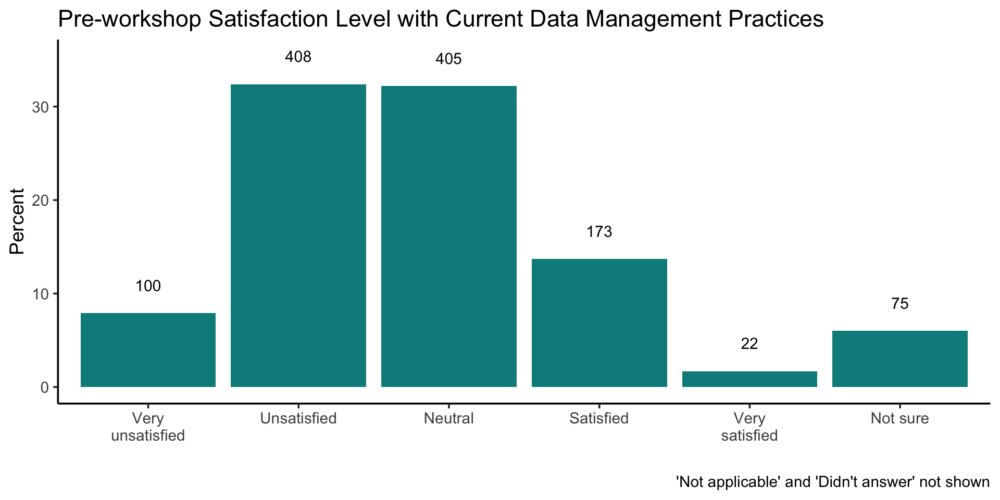
The majority (72.5%) of Data Carpentry’s respondents are either unsatisfied or feel neutral about being satisfied with their current data management practices. By data management practices, we include behaviors such as keeping your raw data raw, reusing code, and using databases, queries, and scripts to manage large datasets.
| Data Carpentry Learners current programming usage | n | % |
|---|---|---|
| Never | 314 | 24.9 |
| Didn’t answer | 276 | 21.9 |
| Several times per year | 168 | 13.3 |
| Less than once per year | 151 | 12.0 |
| Weekly | 131 | 10.4 |
| Daily | 118 | 9.4 |
| Monthly | 101 | 8.0 |
In terms of current programming usage, 36.9% of learners either never use programming, or use programming less than once per year, but no more than several times per year. Only 9.4% program on a daily basis. This is no surprise, as Data Carpentry workshops tend to attract novices.
| How respondents find out about Data Carpentry workshops (n =1211) | n | % |
|---|---|---|
| Received an email about the workshop | 802 | 66.2 |
| My friend/colleague told me about it | 324 | 26.8 |
| My advisor/supervisor told me about it | 244 | 20.1 |
| Read about it in a newsletter or university web site | 85 | 7.0 |
| Other web site | 20 | 1.7 |
| Twitter or other social media | 17 | 1.4 |
| How respondents find out about Software Carpentry workshops (n = 10099) | n | % |
|---|---|---|
| Institution mailing list or flyer | 5152 | 51.0 |
| Friend/colleague | 4821 | 47.7 |
| Conference/meeting/seminar | 641 | 6.3 |
| Funding organization or program officer | 357 | 3.5 |
| Our website | 357 | 3.5 |
| Social Media (Twitter, Facebook, etc.) | 294 | 2.9 |
| Journal or publication | 37 | 0.4 |
Data Carpentry and Software Carpentry workshop participants often find out about our workshops through institution mailing lists (66.2% and 51% respectively). However, “word-of-mouth” also plays a significant role in populating the workshops.
In summary, both Data and Software Carpentry workshop respondents attend workshops to learn about or improve upon their current data management and analysis skills.
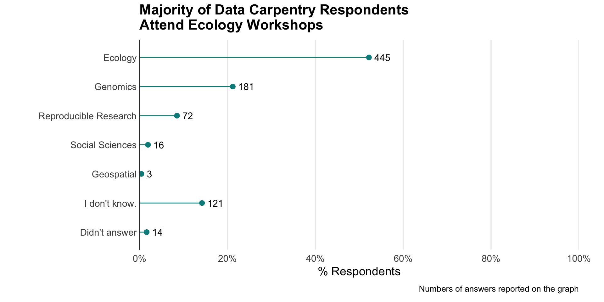
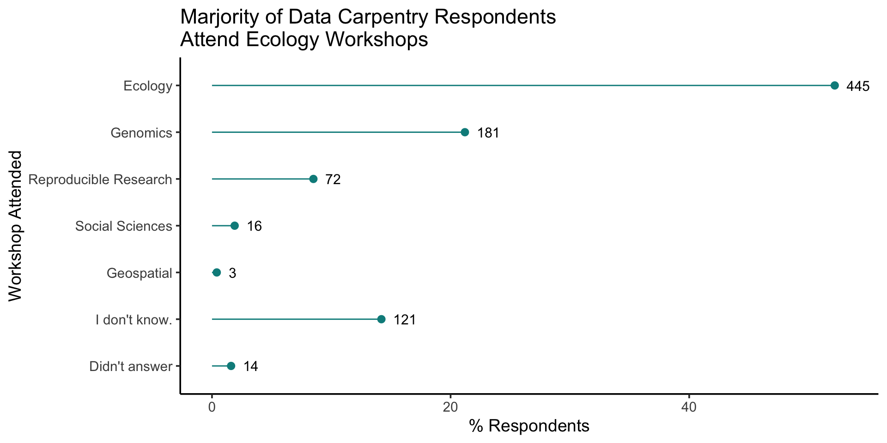
| Data Carpentry: Language Covered in Workshops | n | % |
|---|---|---|
| R | 614 | 72.1 |
| Python | 118 | 13.8 |
| Didn’t answer | 58 | 6.8 |
| Neither | 57 | 6.7 |
| I don’t know./I don’t remember. | 5 | 0.6 |
As previously mentioned, Data Carpentry workshops are domain specific, and curricula include Ecology, Genomics, Geospatial, Social Sciences, and Reproducible Research. 72.1% of respondents learned R in their workshop, while 13.8% learned Python.
The Carpentries is committed to making participation in our workshops a harassment-free experience for everyone, regardless of who you are, where you come from, or your experience with the tools we teach. We establish norms for interaction by having, discussing, and enforcing a Code of Conduct such that our workshops provide open and inclusive learning environments. 79% of Data Carpentry respondents either agree or strongly agree that they felt comfortable learning in their workshop environment, and 87% of Software Carpentry’s respondents agreed or strongly agreed the workshop atmosphere was welcoming.
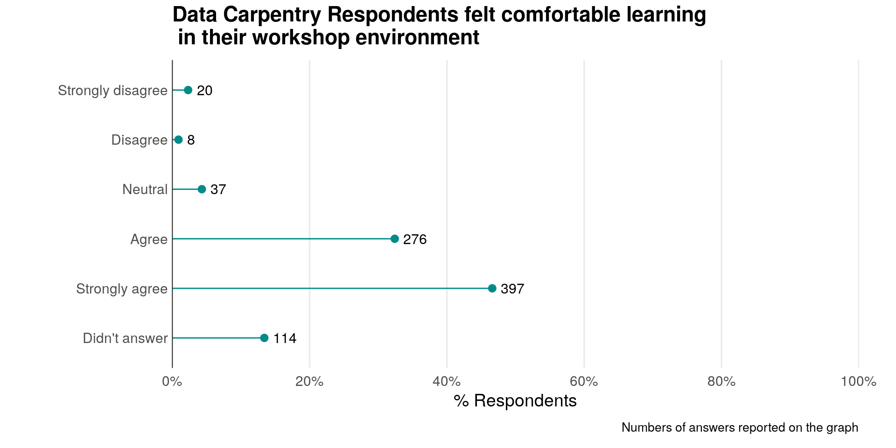
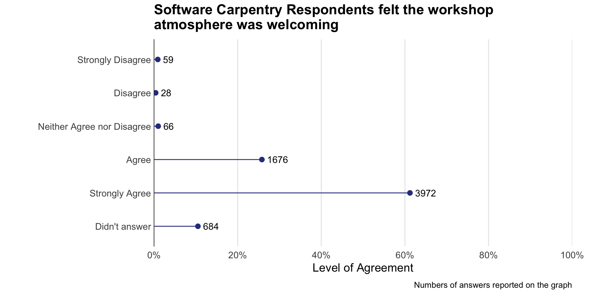
Data Carpentry respondents were asked to rate their level of agreement with several statements regarding their instructor’s knowledge, instructional method, and enthusiasm. Their responses are in the figure below, and axis labels correspond to the statements as follows:
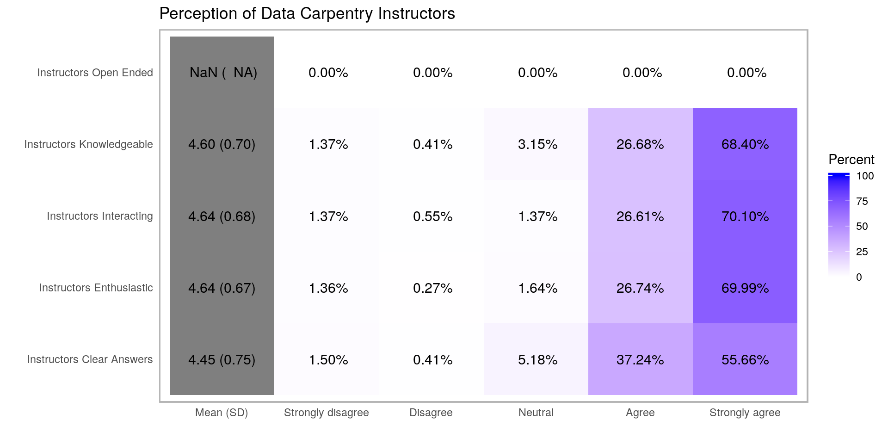
The largest impact we see is that 96.2% of respondents said they felt comfortable interacting with the instructors. We know that our instructors are the reason why our workshops are so well received. It’s also great to see that 94.8% and 96.7% of respondents felt our instructors were knowledgeable about the material being taught, and were enthusiastic about the workshop, respectively. We would like to explore what training would help our instructors so that the percentage of respondents who felt they were able to get clear answers to their questions from the instructors would increase.
Software Carpentry respondents were asked to rate how they felt instructors and helpers worked as a team based on the following criteria:
The two Likert plots below provide an analysis of respondent’s answers for both instructors and helpers.
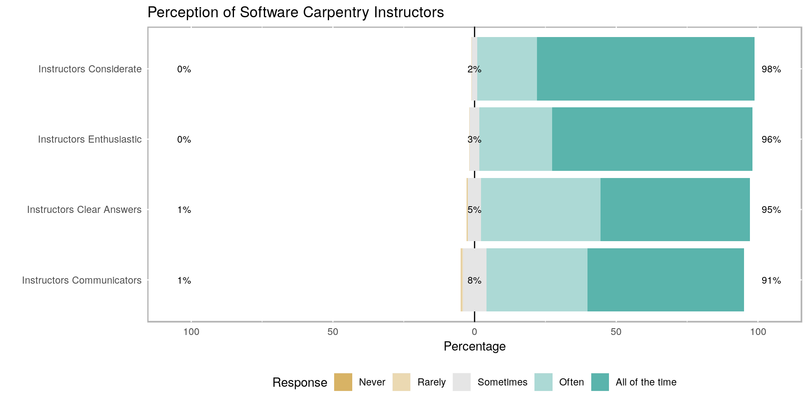
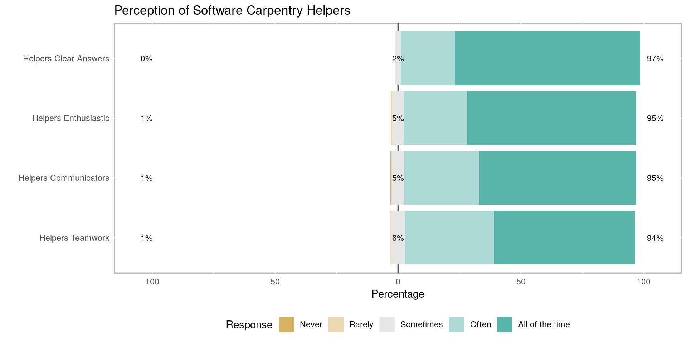
From the figures above, we see that Software Carpentry instructors and helpers are considerate, enthusiastic, give clear answers to questions, and are good communicators. As a whole, our instructors work as a team and are successful in creating a warm and welcoming workshop environment.
One of the goals for Data Carpentry’s lessons is that learners are able to immediately apply what they learned at the workshop. The figure below shows that 65.2% either agree or strongly agree that they’re able to immediately apply what they learned.
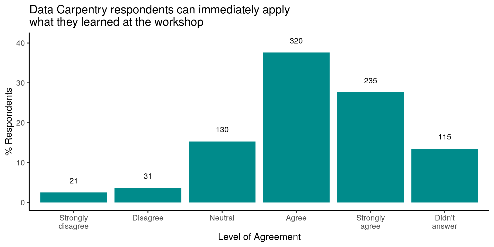
As the majority of Software Carpentry learners attend workshops to learn new skills it is great to see that 47.2% of learners either learned mostly or all new information during the workshop.
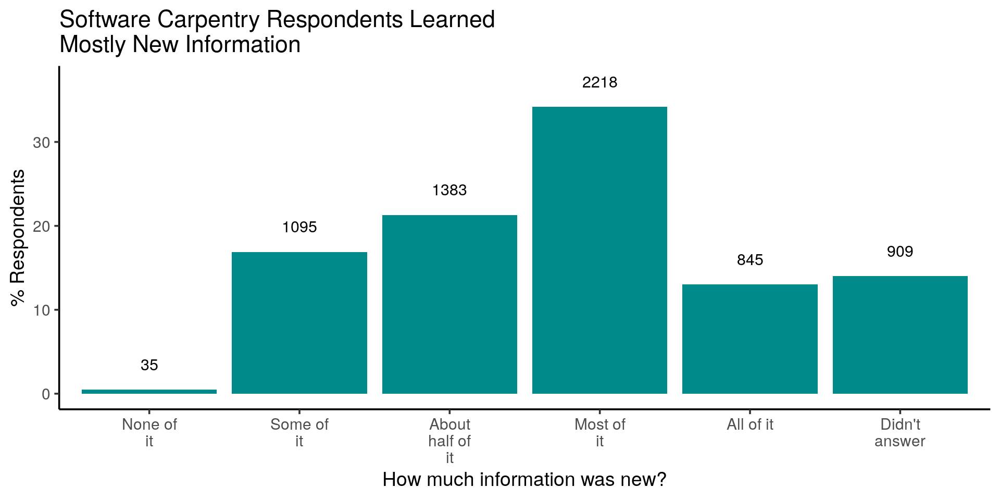
| Data Carpentry Respondents Having Accessibility Issues | n | % |
|---|---|---|
| No | 654 | 76.8 |
| Didn’t answer | 119 | 14.0 |
| Yes | 79 | 9.3 |
We want to be proactive in ensuring learners have access to whatever they need to participate in a workshop. Both Data and Software Carpentry learners are asked to inform workshop organizers if there is anything they need that would make their workshop experience better. Data Carpentry’s respondents were asked if they had accessibility issues, and 9.3% reported they did. After reading the open-ended responses, we see that the issues were related to not being able to hear and/or see in the back of the room.
We use the Net Promoter Score to measure learners’ likelihood of recommending workshops to a friend or colleague. The scoring for this question is on a 0 to 100 scale. Respondents scoring from 0 to 64 are labeled Detractors, and are believed to be less likely to recommend a workshop. Those who respond with a score of 85 to 100 are called Promoters, and are considered likely to recommend a workshop. Respondents between 65 and 84 are labeled Passives, and their behavior falls in the middle of Promoters and Detractors.
| Data Carpentry Net Promoter Score | n | % |
|---|---|---|
| Promoter | 565 | 66.3 |
| Passive | 131 | 15.4 |
| Didn’t answer | 124 | 14.6 |
| Detractor | 32 | 3.8 |
77.6% of Data Carpentry respondants who answered this question are promoters (i.e. would recommend a workshop).
For Software Carpentry respondents who answered this questions, 57% are promoters.
In summary, Data and Software Carpentry workshops provide a warm and welcoming environment whether learners are brand new to programming or have some experience. Attendees are recommending workshops to their friends and colleagues, and we know that our instructors and helpers are the major reason why.
Learners were asked to rate their level of agreement with the following statements related to Data Carpentry’s workshop goals and learning objectives. The figure below provides a visual representation of their responses, comparing them before the workshop and after the workshop. Axis labels and the corresponding question are as follows:
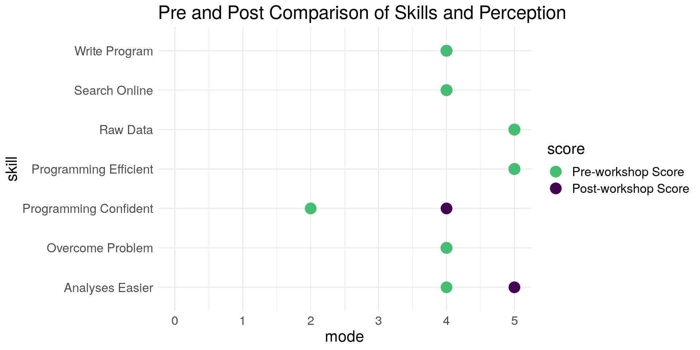
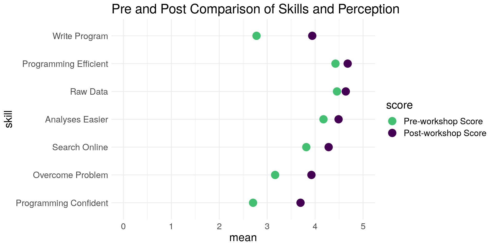
As the scoring for the above factors is ordinal from strongly disagree (1) to strongly agree (5), we show the mode (most frequent responses) for respondents’ before the workshop, and after the workshop. If there is only one point on the plot it is because the mode for pre- and post-workshop responses was the same. The comparison above is paired, meaning, we are comparing those who provided us with a unique identifier and who completed both the pre- and post-workshop survey. This figure includes XX respondses.
In the figures below we show another representation of the pre- and post-comparison of respondents skills and perspectives. The figures below include the data for all learners, not only those who provided a unique identifier and took both the pre- and post-workshop surveys. What we see is a shift in the distribution of for each factor, meaning, respondents’ self-reported confidence and ability shifted in a positive directions.
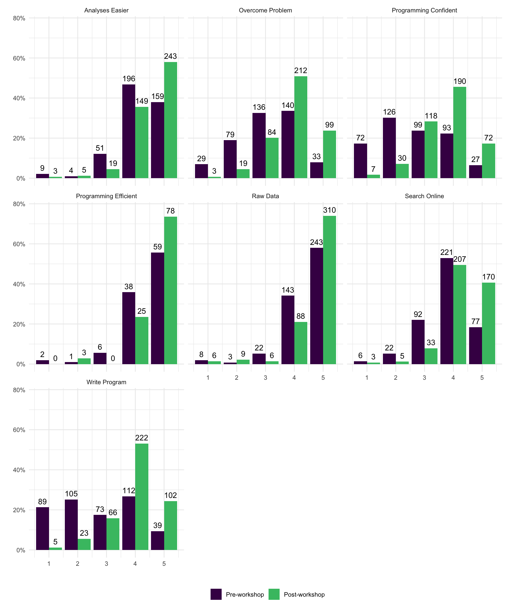
Another representation of the positive shift in distribution is provided below.
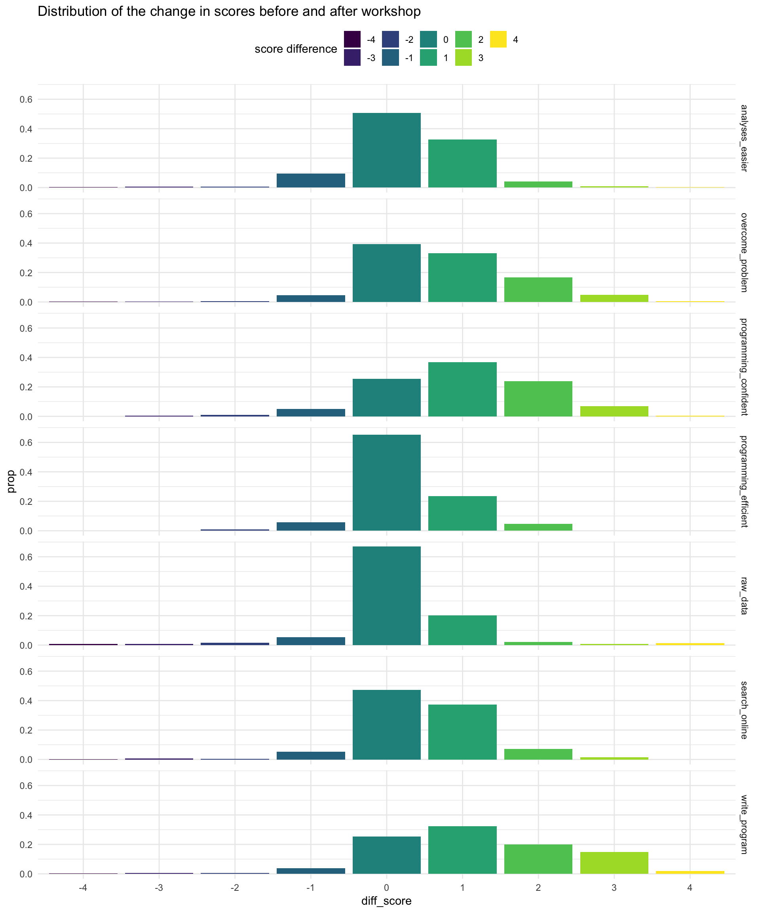
The neutral centered graphs below provide an even clearer picture of the shift in respondents self-reported confidence and skills.
It is interesting to see the shift in neutrality between the pre-workshop scores and post-workshops scores, especially for Programming Efficient. There was a higher percentage of learners beginning the workshop who felt programming with R or Python can make them more efficient at working with data. Contrarily, confidence in using programming to work with data increased from XX% to xx%.
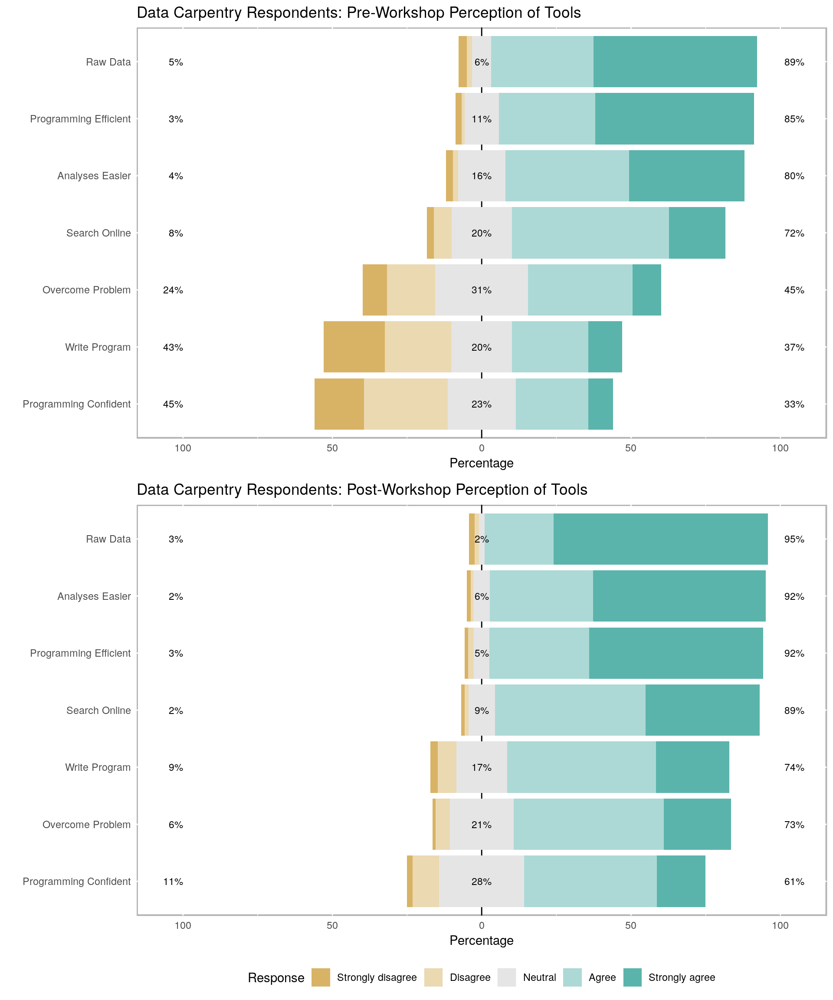
Software Carpentry Respondents were asked to tell us about their experience with these topics before the workshop:
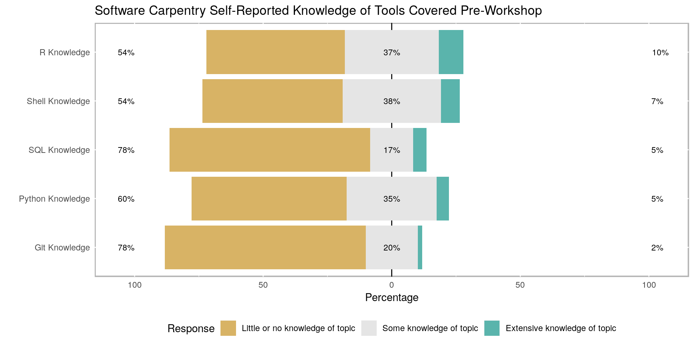
From the figure we see that XX% and less had extensive knowledge of the topics covered in their workshop.
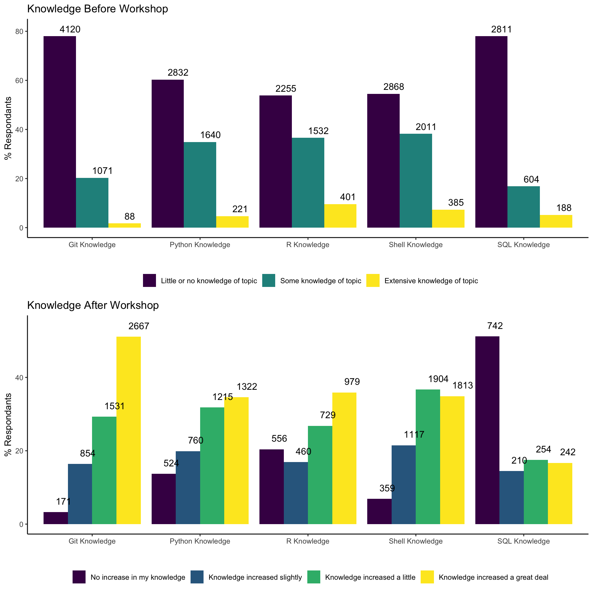
The following is a comparison of Software Carpentry Respondents’ knowledge about the tools before compared to after the workshop. We see clearly that after the workshop, respondents’ knowledge of Git, Python, R, and the Unix Shell increased a great deal.
Motivation is important, but being confident in your ability to complete specific computing tasks is an equally important goal of Software Carpentry. The grid below shows respondents’ self-reported ability to complete tasks including:
It also provides their self-reported level of confidence in being able to complete the tasks above after completing the workshop.
These figures tell us that, before the workshop, between XX% and XX% of the respondents did not feel they could initialize a repository in Git, write a ‘for loop’ to automate tasks, use pipes to connect shell commands, write a SQL query, and/or write a unit test in R or Python. XX% of learners felt their confidence increased greatly with respect to importing a library or package in R or Python. We consider this significant as it is one of the fundamental skills that allows learners to be successful in the other areas mentioned above.
In summary, respondents experienced increased confidence in their ability to perform specific computing tasks and solve problems, or at least search for answers to problems, as a result of participating in Software and Data Carpentry workshops.
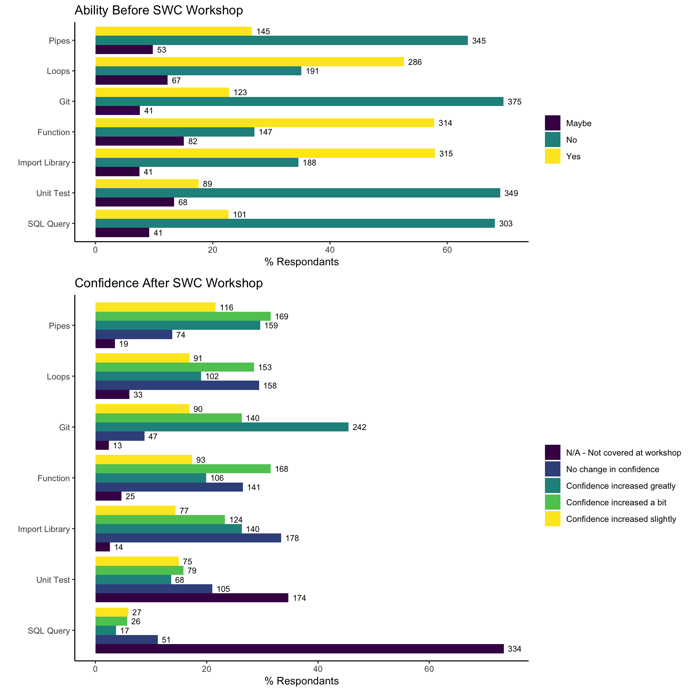
The Carpentries is a global community that has recognized the importance of bringing people to data through high-impact trainings. Thought the majority of Data Carpentry respondents attended a workshop in the United States of America (45.3%), we see an increase in workshops in places like Ethiopia (3.7%), Switzerland (0.6%), and India (0.1%).
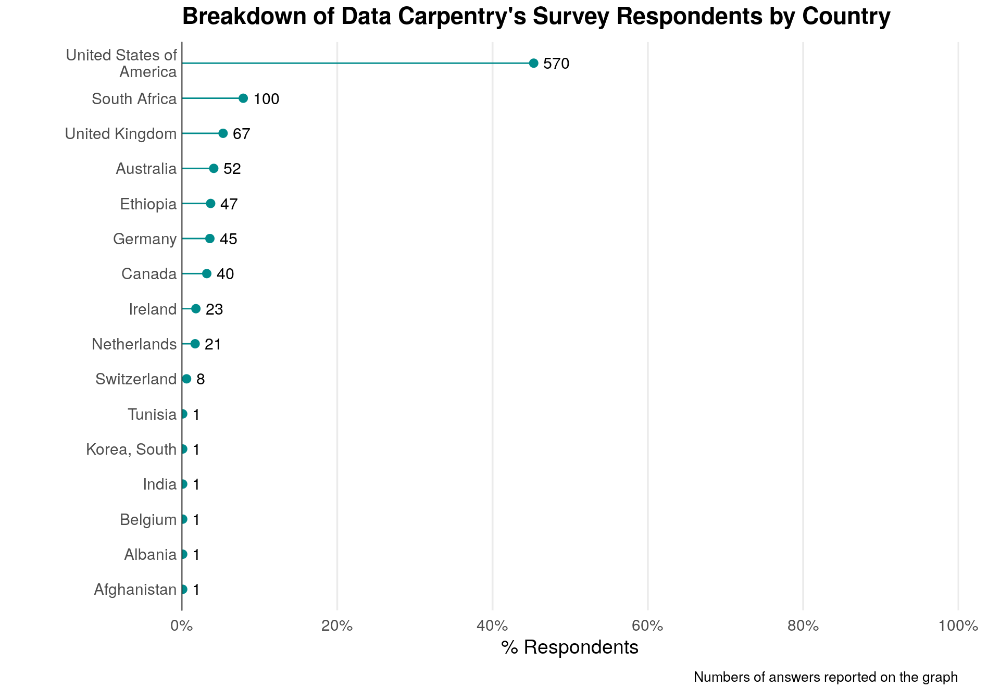
| Software Carpentry Workshops in US | n | % |
|---|---|---|
| Yes | 6489 | 45.7 |
| No | 4650 | 32.8 |
| Didn’t answer | 3046 | 21.5 |
In Software Carpentry’s pre-workshop survey, respondents are asked whether or not their workshop takes place in the United States. 45.7% of respondents attended a U.S. workshop.
| Data Carpentry’s Respondents by Discipline | n | % |
|---|---|---|
| Life Sciences | 444 | 37.4 |
| Agricultural or Environmental Sciences | 307 | 25.9 |
| Bioinformatics/Genomics | 292 | 24.6 |
| Biomedical/Health Sciences | 288 | 24.3 |
| Social Sciences | 122 | 10.3 |
| Mathematics or Statistics | 101 | 8.5 |
| Earth Sciences | 96 | 8.1 |
| Engineering | 91 | 7.7 |
| Computer Science | 88 | 7.4 |
| Business/Economics | 57 | 4.8 |
| Physical Sciences | 53 | 4.5 |
| Humanities | 53 | 4.5 |
| Library Sciences | 28 | 2.4 |
As previously mentioned, Data Carpentry’s curricula is domain specific to Ecology, Genomics, Geospatial, and the Social Sciences. We see this in the distribution of respondents by discipline. 37.4% are in the Life Science, while 25.9%, 24.6%, and 24.3% are in Agricultural or Environmental Sciences, Bioinformatics/Genomics, and Biomedical/Health Sciences, respectively.
| Software Carpentry’s Respondents by Discipline | n | % |
|---|---|---|
| Life Science - Organismal/systems (ecology, botany, zoology, microbiology, neuroscience) | 2698 | 28.1 |
| Life Sciences (Genetics, genomics, bioinformatics ) | 2683 | 27.9 |
| Mathematics/statistics | 945 | 9.8 |
| Physics | 803 | 8.4 |
| Planetary sciences (geology, climatology, oceanography, etc.) | 787 | 8.2 |
| Civil, mechanical, chemical, or nuclear engineering | 696 | 7.2 |
| Medicine and/or Pharmacy | 688 | 7.2 |
| Social sciences | 591 | 6.1 |
| Chemistry | 578 | 6.0 |
| Economics/business | 483 | 5.0 |
| Psychology | 418 | 4.3 |
| Library and information science | 375 | 3.9 |
| High performance computing | 365 | 3.8 |
| Humanities | 319 | 3.3 |
| Education | 264 | 2.7 |
| Space sciences | 163 | 1.7 |
Software Carpentry’s respondent base also has a majority Life Sciences base, however we also see representation from those working in Psychology, High Performance Computing, and Chemistry.
| Data Carpentry’s Respondents by Position | n | % |
|---|---|---|
| Graduate Student | 592 | 49.7 |
| Research Staff | 200 | 16.8 |
| Postdoctoral Researcher | 183 | 15.4 |
| Faculty | 101 | 8.5 |
| Government Employee | 80 | 6.7 |
| Industry Employee | 49 | 4.1 |
| Undergraduate Student | 48 | 4.0 |
| Management/Administrator | 20 | 1.7 |
| Retired/Not Employed | 18 | 1.5 |
As many of The Carpentries’ workshops are hosted on college campuses and other research-based communities, there is no surprise that the majority of respondents are Graduate Students (49.7% - DC, 35.3% - SWC), Research Staff (16.8% - DC,9.7% - SWC), and Postdoctoral Researchers (1.5% - DC, 12.2% - SWC).
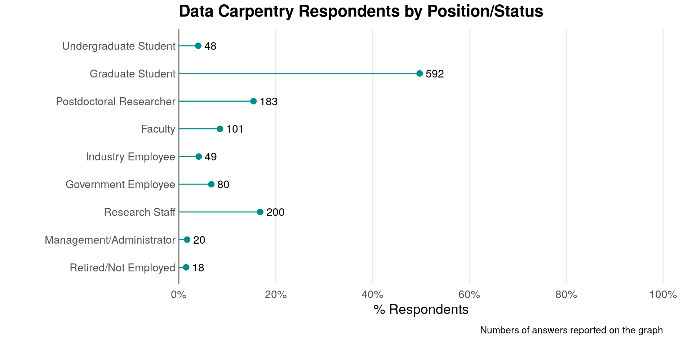
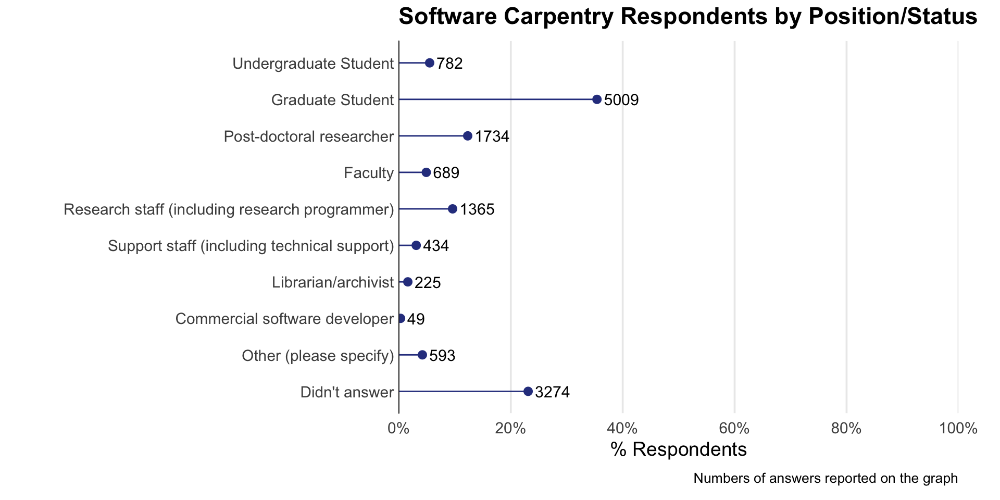
| Operating System Respondents Use in Data Carpentry Workshops | n | % |
|---|---|---|
| Windows | 661 | 52.5 |
| Apple/Mac OS | 512 | 40.7 |
| UNIX/Linux | 50 | 4.0 |
| Didn’t answer | 19 | 1.5 |
| Not sure | 17 | 1.4 |
In our workshops, we recommend that learners use their own machines. It is important for learners to leave the workshop with their own machine set up to do real work. Our instructors teach on three major platforms: UNIX/Linux, Mac OS X, and Windows. We see a very close representation of Windows (52.5%) and Apple/Mac OS (40.7%) users in our Data Carpentry workshops, and even a few UNIX/Linux users (4%).
Gender and racial/ethnic identity information is collected for U.S. participants, as we are keen to increase the number of diverse instructors and learners we serve. Understanding our demographic makeup helps us to strategize about what communities to reach and what programs to offer.
Currently, both Data (XX%) and Software (XX%) Carpentry see strong representation from Women in the United States. Where we hope to improve is in reaching the non-White audience, as less than XX% of our respondents are from communities historically underrepresented in the science, technology, engineering, and mathematics (STEM) fields.
| Data Carpentry’s U.S. Respondents’ Gender Identity | n | % |
|---|---|---|
| Female | 322 | 56.5 |
| Male | 223 | 39.1 |
| Didn’t answer | 14 | 2.5 |
| Prefer not to answer | 8 | 1.4 |
| Transgender female | 2 | 0.4 |
| Not listed (please specify) | 1 | 0.2 |
| Data Carpentry’s U.S. Respondents Racial/Ethnic Identity | n | % |
|---|---|---|
| White | 316 | 58.1 |
| Asian | 152 | 27.9 |
| Hispanic or Latino(a) | 57 | 10.5 |
| I prefer not to say. | 28 | 5.1 |
| Black or African American | 25 | 4.6 |
| American Indian or Alaska Native | 4 | 0.7 |
| Native Hawaiian or Other Pacific Islander | 3 | 0.6 |
| Software Carpentry’s U.S. Respondents’ Gender Identity | n | % |
|---|---|---|
| Female | 3120 | 48.1 |
| Male | 3119 | 48.1 |
| Didn’t answer | 117 | 1.8 |
| Prefer not to say | 115 | 1.8 |
| Other | 18 | 0.3 |
| Software Carpentry’s U.S. Respondents’ Racial/Ethnic Identity | n | % |
|---|---|---|
| White / Caucasian | 3457 | 53.3 |
| Asian / Pacific Islander | 1560 | 24.0 |
| Hispanic or Latino | 388 | 6.0 |
| Prefer not to say | 375 | 5.8 |
| Black or African American | 242 | 3.7 |
| Multiple ethnicity / Other (please specify) | 221 | 3.4 |
| Didn’t answer | 212 | 3.3 |
| American Indian or Alaskan Native | 29 | 0.4 |
| Native Hawaiian or Other Pacific Islander | 5 | 0.1 |